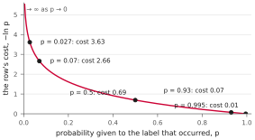
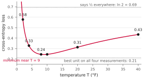

NJIT · CS 301 · INTRODUCTION TO DATA SCIENCE · FALL 2026 PDF
Meeting 4. The Cost of Being Wrong
Act 1 Scoring a Guess: Likelihood · Act 2 The Cross-Entropy Loss
Meeting 2 ended with a question that has been waiting ever since: you chose weights for AND by hand, and you wrote down how you did it — could something other than a person follow that procedure? Meeting 3 refused a smaller question. Shown a line that puts 707 of 6,865 days on the wrong side, we counted the wrong days and left it there.
Neither question can be answered until one thing exists: a way to say how good a candidate setting is, as a single number. A search that cannot compare two guesses cannot prefer one. This meeting builds that number. Nothing is searched here — every setting compared below was chosen by hand — but by the end the unit has a score, and a wrong answer has a price.
Act 1. Scoring a Guess: Likelihood
1.1 Counting is a bad score
The obvious score is the one meeting 3 used: count the days the line puts on the wrong side, and prefer the line with fewer. It has two defects, and both matter.
It ignores confidence. Take two lines, both wrong about November 6, 2024. One gave that day a probability of 0.51 of being in the warm half; the other gave it 0.93. By the count they are equally wrong. They are not equally wrong: the second was confident and mistaken, which is worse than being mistaken while unsure.
It barely moves. Shift a line a little and, almost always, no day crosses to the other side — the days sit at scattered points, and a small move of the boundary steps over none of them. The count is therefore the same number for a whole neighbourhood of lines, and a score that cannot tell nearby candidates apart cannot guide a choice between them.
What is wanted instead is a score that reads the unit’s probabilities rather than only its verdicts, and that changes whenever the setting changes.
1.2 What it means to explain the data
Meeting 3 read the unit’s output as its confidence that the label is 1. There is a second reading of the same number, and it makes this meeting easier: the output is the probability that the neuron fires.
Take one row, with input \(\mathbf{x}_i\), label \(y_i\), and score \(s_i\).
- If \(y_i = 1\), the neuron should fire. The probability that it was right about this row is the probability that it fires: \(\sigma(s_i)\).
- If \(y_i = 0\), the neuron should stay silent. The probability that it was right is the probability that it does not fire: \(1 - \sigma(s_i)\).
Write \(p_i\) for that number, whichever case the row falls into: \(p_i\) is the probability that the neuron was right about row \(i\). Three days of the weather data, under the hand-drawn line high \(+\) low \(= 120\) with \(T = 10\):
| day | high | low | label | \(p_i\) |
|---|---|---|---|---|
| July 10, 2024 | 93 | 79 | warm half | 0.995 |
| November 6, 2024 | 83 | 63 | cold half | 0.07 |
| May 9, 2020 | 50 | 34 | warm half | 0.027 |
A setting explains the data well when \(p_i\) is high on row after row. This setting explains the July day very well and the other two badly — which is the arithmetic form of what meeting 3 said about them.
1.3 One expression, both cases
The definition of \(p_i\) just given is a definition by cases: \(\sigma(s_i)\) in one circumstance, \(1 - \sigma(s_i)\) in the other. That is perfectly clear to a person reading one row at a time, and it is awkward everywhere else. A formula with the word “if” in it cannot be handed to a computer that is processing thousands of rows at once, and it cannot be manipulated algebraically as a single object.
So: is there one expression that gives \(\sigma(s)\) when \(y = 1\) and \(1 - \sigma(s)\) when \(y = 0\), with no cases at all?
There is, and it uses a fact that is easy to walk past: \(y\) is 0 or 1 and nothing else. A quantity that can only be 0 or 1 can be used as a switch. For any two numbers \(A\) and \(B\), consider
When \(y = 1\) this is \(1\cdot A + 0\cdot B = A\). When \(y = 0\) it is \(0\cdot A + 1\cdot B = B\). One of the two terms is multiplied by 1 and survives; the other is multiplied by 0 and vanishes. The label chooses.
Now take \(A = \sigma(s)\) and \(B = 1 - \sigma(s)\):
This is the same rule as before — not an approximation of it, not a different rule that usually agrees — written without cases. It is worth being suspicious of, because it looks like an average of the two possibilities, and it is not: since \(y\) never takes a value between 0 and 1, nothing is ever blended. Exactly one term is ever alive.
Example 1.1 The label as a switch
Check both branches on numbers.
A row whose label is \(1\), with \(\sigma(s) = 0.9\). The expression is \(1 \cdot 0.9 + (1 - 1)\cdot(1 - 0.9) = 0.9 + 0 \cdot 0.1 = 0.9\). The neuron should fire and fires with probability \(0.9\), so it was right with probability \(0.9\). Correct.
A row whose label is \(0\), with \(\sigma(s) = 0.3\). The expression is \(0 \cdot 0.3 + (1 - 0)\cdot(1 - 0.3) = 0 + 0.7 = 0.7\). The neuron should stay silent, and it stays silent with probability \(0.7\), so it was right with probability \(0.7\). Correct — and notice that the unit’s own output, \(0.3\), is not the answer. On a row labelled 0 the unit is doing well when its output is small.
One warning, for later. The term that gets multiplied by zero is still written down, and it can be a perfectly awful number: on the second row above, the dead term contains \(\sigma(s) = 0.3\), and if \(\sigma(s)\) had been \(0\) it would contain \(\log 0\). In arithmetic, zero times anything is zero and the dead term is harmless. In a computer, \(0 \times (-\infty)\) is not zero; it is nan, “not a number,” and it poisons everything it touches. §2.8 returns to this.
1.4 Likelihood
One row at a time is not yet a score for the whole dataset. Combine them.
If the rows are taken to be independent — each day’s outcome does not depend on the others — then the probability that the neuron was right about every row is the product of the per-row probabilities. That number has a name:
Read it either way round. It is the probability that the neuron got the whole dataset right; equivalently, it is the probability of everything that actually happened, computed as though the unit’s probabilities were the true ones. Higher is better, and it is one number for a whole setting, which is what §1.1 asked for.
Two consequences follow from its being a product, and they are the reason it behaves as a score should.
One confident mistake hurts. A row on which the neuron was right with probability \(0.07\) multiplies the whole likelihood by \(0.07\). No amount of being right elsewhere undoes that cheaply.
One certain mistake is fatal. A row with \(p_i = 0\) sends the product to exactly \(0\). The unit of meeting 1, which answers only 0 or 1, is wrong on 707 days of the weather data and assigns each of them a probability of \(0\). Its likelihood on that data is exactly zero, and would remain zero if it were right about every other day in the record. This is what meeting 3 meant by saying that the sigmoid unit, wrong about the same November day, at least “gave 7% to what happened.”
Example 1.2 Likelihood by hand
The unit with \(w = (1, 1)\), \(\theta = 1.5\) and \(T = 1\), asked for AND. This is the first task of the meeting’s sheet.
The score is \(s = x_1 + x_2 - 1.5\), so the four rows give \(-1.5\), \(-0.5\), \(-0.5\) and \(0.5\). Applying the sigmoid: \(\sigma(-1.5) = 0.18\), \(\sigma(-0.5) = 0.38\), \(\sigma(0.5) = 0.62\).
Now the switch. The first three rows are labelled 0, so their \(p_i\) is \(1 - \sigma\); the last is labelled 1, so its \(p_i\) is \(\sigma\).
| \(x_1\) | \(x_2\) | AND | \(s\) | \(\sigma(s)\) | \(p_i\) |
|---|---|---|---|---|---|
| 0 | 0 | 0 | \(-1.5\) | 0.18 | 0.82 |
| 0 | 1 | 0 | \(-0.5\) | 0.38 | 0.62 |
| 1 | 0 | 0 | \(-0.5\) | 0.38 | 0.62 |
| 1 | 1 | 1 | \(0.5\) | 0.62 | 0.62 |
The likelihood is \(0.82 \times 0.62 \times 0.62 \times 0.62 = 0.20\).
Now hold the same line more firmly: double the weights and the threshold, to \(w = (2,2)\) and \(\theta = 3\). The line is unchanged — \(2x_1 + 2x_2 = 3\) is the same set of points as \(x_1 + x_2 = 1.5\) — but the scores are twice as large: \(-3, -1, -1, 1\). The probabilities become \(0.95, 0.73, 0.73, 0.73\), and the likelihood rises to \(0.37\).
1.5 On a truth table, certainty is free
Continue the doubling. Multiplying \(w\) and \(\theta\) by \(k\) leaves the boundary exactly where it was and multiplies every score by \(k\):
| \(k\) | \(p_i\) on the four rows | likelihood | |||
|---|---|---|---|---|---|
| 1 | 0.82 | 0.62 | 0.62 | 0.62 | 0.20 |
| 2 | 0.95 | 0.73 | 0.73 | 0.73 | 0.37 |
| 4 | 0.9975 | 0.88 | 0.88 | 0.88 | 0.68 |
| 8 | 1.0000 | 0.98 | 0.98 | 0.98 | 0.95 |
Every row improves, every time. The reason is worth stating plainly: on this table every row is already on the correct side of the line, so every row is a row where more confidence means more credit. Nothing pulls the other way, and the likelihood climbs toward 1 as \(k\) grows.
Hold on to the phrasing — every row is on the correct side — because it is exactly what fails on real data, and §2.5 is about what happens then.
1.6 A product of 6,865 numbers
The likelihood has one practical defect, and it is severe. On the weather data it is a product of 6,865 numbers, each smaller than 1. For the hand-drawn line at \(T = 10\) its value is about \(10^{-730}\).
A double-precision floating-point number — the kind Python uses — cannot represent anything smaller than about \(10^{-308}\). The likelihood of this perfectly ordinary setting is a real number that the machine silently rounds to zero. Two different settings, one much better than the other, would both be reported as zero, and the score would be useless exactly where it was needed.
The fix is one line of high-school algebra, and it is the subject of the second act.
Act 2. The Cross-Entropy Loss
2.1 From a product to a sum
The logarithm turns products into sums: \(\log(ab) = \log a + \log b\), and so
This is the quantity called the log-likelihood. Two things make it a safe substitute for what it replaces.
It ranks settings identically. The logarithm is an increasing function, so if one setting has the larger likelihood it has the larger log-likelihood. Nothing about which setting is preferred can change.
And it is a number the computer can hold. Each \(\log p_i\) is a modest negative number, and their sum for the weather at \(T = 10\) is about \(-1{,}680\): unremarkable to store, where \(10^{-730}\) was impossible.
Throughout this course the logarithm is the natural logarithm, written \(\ln\) or \(\log\) interchangeably here. The choice matters only for the units, which §2.7 will name.
2.2 From goodness to loss
Two conventions convert the log-likelihood into the quantity actually used.
Flip the sign. The log-likelihood is negative, and larger is better; it is easier to work with a quantity that is positive, and where the goal is to make it small. Negating does that. The name for such a quantity is a loss.
Divide by the number of rows. A truth table has 4 rows and the weather has 6,865, so their totals are not comparable; per-row averages are. This also means that a loss can be quoted for a dataset without saying how big the dataset is.
Applying both to the log-likelihood, and substituting the switch form of \(p_i\) from §1.3, gives the cross-entropy loss:
The bracket deserves a second look, because it is the switch of §1.3 again, now inside the logarithm rather than outside it. There, one of two probabilities was selected; here, one of two logarithms is. On a row with \(y_i = 1\) the bracket is \(\log \sigma(s_i)\), and on a row with \(y_i = 0\) it is \(\log(1 - \sigma(s_i))\) — in both cases \(\log p_i\), which is what the sum needs.
This step is safe for the same reason as before, and only for that reason: \(y\) is 0 or 1. It is not generally true that \(\log\big(yA + (1-y)B\big)\) equals \(y \log A + (1-y)\log B\); with, say, \(y = \tfrac12\) the left side is the logarithm of an average and the right side is an average of logarithms, and those differ. What rescues the identity is that \(y\) never takes such a value. At \(y = 1\) both sides are \(\log A\); at \(y = 0\) both are \(\log B\); and there is no third case to check.
2.3 One row’s bill
Each row contributes \(-\log p_i\) to the loss. It is worth seeing that function on its own.

Read the curve as a price list for being wrong.
- \(p = 0.995\) costs \(0.01\). The unit was sure and right: almost free.
- \(p = 0.93\) costs \(0.07\); \(p = 0.5\) costs \(0.69\).
- \(p = 0.07\) costs \(2.66\) — November 6, 2024 under the hand line.
- \(p = 0.027\) costs \(3.63\) — May 9, 2020.
- And as \(p\) approaches 0, the cost grows without bound.
There is the moral of the sigmoid never quite reaching 0 or 1, stated as money. A wrong answer given with confidence costs a finite amount, and the more confident it was, the more it costs. A wrong answer given with certainty costs infinitely: the 0-or-1 unit, on that same November day, pays a bill no quantity of correct days can offset. This is the sense in which today’s title should be read — the loss is the price of being wrong, and the unit chooses how much to stake.
Example 2.1 Cross-entropy by hand
The two settings of Example 1.2, now scored by the loss. This is the second task of the meeting’s sheet.
For \(k = 1\) the probabilities were \(0.82, 0.62, 0.62, 0.62\). Their negative logarithms are \(0.20, 0.48, 0.48, 0.48\), and the loss is the average:
For \(k = 2\) the probabilities were \(0.95, 0.73, 0.73, 0.73\), so the bills are \(0.05, 0.32, 0.32, 0.32\) and the loss is \(1.01/4 = 0.25\). Doubling the weights halved the price, roughly, and it did so without moving the line by a hair.
Two mistakes are worth naming because they are the common ones. Dropping the minus sign gives a negative loss, which is impossible: every bill is the negative logarithm of a number below 1, hence positive. And skipping the division by 4 gives a number that cannot be compared with anything computed on a dataset of a different size.
2.4 Why the loss can reach zero on a truth table
Take the doubling further. The likelihoods of §1.5 correspond to these losses:
| \(k\) | 1 | 2 | 4 | 8 |
|---|---|---|---|---|
| likelihood | 0.20 | 0.37 | 0.68 | 0.95 |
| loss | 0.41 | 0.25 | 0.096 | 0.014 |
The loss falls toward zero, and the word “toward” is exact: since \(\sigma\) never attains 1, no \(p_i\) is ever exactly 1, no bill is ever exactly 0, and the loss is never exactly zero. But there is no lower bound short of zero either — name a small number and a large enough \(k\) gets under it.
This is a fact about truth tables, not about units. A truth table gives each input exactly one output, the same output every time, and the four rows of AND happen to be arranged so that a line can put all of them on their correct sides. Once that is true, confidence is free, and the price of being wrong can be driven to nothing because the unit is never wrong.
2.5 And never on the weather
On the weather data the same manoeuvre stops working, and it is worth seeing exactly where.
There are 6,865 days and 1,878 distinct (high, low) pairs, so many days share an input with some other day. Of those pairs, 337 occur with both labels — the same high and the same low, once in the warm half of the year and once in the cold. Those pairs cover 1,881 days, more than a quarter of the data.
Take one of them. A high of 82° F with a low of 63° F occurs on 14 days: 12 in the warm half and 2 in the cold half. The unit sees the same two numbers on all 14 days, so it returns the same probability on all 14 days — it has nothing to distinguish them with. Call that probability \(q\). Then 12 days pay \(-\ln q\) each and 2 days pay \(-\ln(1 - q)\) each, and the average bill over the 14 is
Choosing \(q\) to make this as small as possible gives \(q = 12/14 = 0.86\) — believe what the data does — and a cost of \(0.41\) per day. Not zero. Choosing any other \(q\) makes it worse, and choosing \(q\) close to 0 or 1 makes it far worse: the two cold days alone would pay \(-\ln(1-q)\) each, which grows without bound as \(q\) approaches 1.
So there is a floor, and no setting can get under it. Here is the scale of the whole thing, for the weather:
| a unit that answers \(\tfrac12\) on every day | 0.693 |
| a clearly wrong line, high \(+\) low \(= 160\) | 1.11 |
| the hand-drawn line at its best \(T\) | 0.243 |
| the best line on (high, low) | 0.217 |
| the best unit on all four measurements | 0.212 |
The floor is a little above \(0.21\), and it is a property of the data. April and October have nearly the same weather and opposite labels; no rule computed from four measurements can separate days that the measurements do not distinguish. Meeting 3 put it as the question is hard; this is the same statement with a number attached.
2.6 Temperature, seen by the loss
The loss also settles a question meeting 3 left open. There, \(T\) was a knob, and the value \(T = 10\) was chosen by hand with no reason given. With a loss in hand, the data can be asked which \(T\) it prefers. Keeping the hand-drawn line fixed and turning only \(T\):

There is a minimum, near \(T = 9\). Sharpening the unit below that value makes it worse, and blurring it above that value makes it worse.
The reason is the competition §1.5 said was missing on a truth table. Lowering \(T\) makes every output more extreme. On the roughly 6,158 days that the line places correctly, that lowers the bill. On the 707 days it places wrongly, that raises the bill — and raises it steeply, since those bills sit on the expensive part of the curve in §2.3. The total falls while the first effect dominates and rises once the second does, and between them sits a best sharpness. On a truth table there is no second effect, which is why the same curve there just keeps falling.
One consequence, worth noticing now: multiplying the weights and the bias by \(k\) has the same effect as dividing \(T\) by \(k\), since both multiply every score by the same factor. Sharpness is not a separate thing from the size of the weights. They are one quantity wearing two names.
2.7 Why it is called cross-entropy
The loss was built here out of a probability, a logarithm and an average, and nothing about that construction explains its name. The name is borrowed, and the thing it is borrowed from is worth a page.
Start with a single number: if something you believed had probability \(p\) happens, then \(-\log p\) measures how surprised you should be. If you were certain (\(p = 1\)) the surprise is 0. The less probability you gave it, the more surprised you are, without limit. That is precisely the bill of §2.3 — so the cross-entropy loss is the average surprise of the unit, over the rows, at what actually happened. A unit that explains the data is a unit that is rarely surprised by it.
Now suppose outcomes occur according to some distribution \(p\) — outcome \(i\) happening a fraction \(p_i\) of the time. The average surprise of someone who believes \(p\) and sees the world do \(p\) is
and this quantity is the entropy of \(p\). It was defined by Claude Shannon in 1948, in the paper that created information theory, and it measures how uncertain the situation is in the first place: a coin that always lands heads has entropy 0 and there is nothing to learn; a fair coin has the largest entropy two outcomes can have.
Entropy has a unit, and the logarithm chooses it. With logarithms base 2 the unit is the bit, and the entropy of a fair coin is exactly 1 bit — one yes-or-no question settles it. With natural logarithms, as here, the unit is called the nat, and the same fair coin has entropy \(\ln 2 = 0.693\) nats. That number should look familiar: it is the loss of a unit that answers \(\tfrac12\) on every day, from the table in §2.5. Such a unit has learned nothing from the measurements, so each day still costs a full yes-or-no question. It is not a coincidence; it is the same quantity.
Finally the “cross”. Suppose the world does \(p\) but you believe some other distribution \(q\). Your average surprise is then
the cross-entropy of \(q\) relative to \(p\): the outcomes are weighted by how often they really happen, but the surprise of each is computed from what you believed. It is smallest when \(q = p\), and every departure of your beliefs from the truth costs you something.
Our loss is exactly this, one row at a time. On a row, what the world does is not in doubt — the label happened — so the true distribution puts all of its weight on the observed label and none on the other. What the unit believes is \(\sigma(s_i)\) for label 1 and \(1 - \sigma(s_i)\) for label 0. Substituting those into the formula above leaves a single surviving term, \(-\log p_i\), which is the row’s bill; averaging over rows gives \(L\). The loss is the average cross-entropy between what happened and what the unit believed, and the name is a description rather than a decoration.
The last line of §2.5 can now be said in bits. A unit that says \(\tfrac12\) everywhere pays 1 bit per day. The best unit on the four measurements pays \(0.212\) nats, which is \(0.31\) bits. The difference, about two-thirds of a bit per day, is what a day’s weather is worth when the question is which half of the year it fell in.
C. E. Shannon, A Mathematical Theory of Communication, Bell System Technical Journal 27 (1948), 379–423 and 623–656. Shannon appears in this course twice: his 1937 master’s thesis, A Symbolic Analysis of Relay and Switching Circuits, showed that Boolean algebra describes switching circuits, which is the reason the machine of meeting 1 is built out of logic gates at all. The principle of preferring the setting that makes the observed data most probable is older still, and is due to R. A. Fisher in the 1920s.
2.8 Computing it without breaking it
Written directly, the loss is two lines of NumPy:
p = sigmoid(s) loss = -np.mean(y * np.log(p) + (1 - y) * np.log(1 - p))
On the AND table this reproduces the \(0.41\) and \(0.25\) of Example 2.1, and on the weather with the hand line at \(T = 10\) it gives \(0.245\).
Run the same two lines at \(T = 1\), however, and the result is inf — although the true loss at \(T = 1\) is \(1.12\), a perfectly ordinary number. Two facts from earlier meet here. At \(T = 1\) the scores are ten times larger, and 804 of the days have a score above about 37. The sigmoid of 37 is not 1, but it is closer to 1 than a double-precision number can express, so it is stored as exactly \(1.0\) — the finite-precision remark of meeting 3, arriving with consequences. Then \(\log(1 - 1.0) = \log 0 = -\infty\), one bill is infinite, and the average of anything with an infinity in it is an infinity.
Worse, the warning in Example 1.1 now matters: on such a row the infinite logarithm may be the term multiplied by \(y = 0\), and \(0 \times (-\infty)\) evaluates to nan, not to \(0\). The formula is correct; evaluating it in this order is not.
The cure is to never form \(p\) at all. Writing \(z\) for the score divided by the temperature, a little algebra gives
so each bill is \(\log(1 + e^{x})\) for a suitable \(x\). That function is computed safely as
where the exponential is now of a negative number and cannot overflow. NumPy provides it as np.logaddexp(0, x), and the whole loss becomes
loss = np.mean(np.where(y == 1, np.logaddexp(0, -z), np.logaddexp(0, z)))
which returns \(1.12\) at \(T = 1\) and agrees with the direct version everywhere the direct version works.
2.9 Two things to take with you
A guess can now be scored. For any setting, on any dataset, there is one number saying how well it explains what happened — computable by hand on four rows, and by one line of code on 6,865 days. It reads the unit’s probabilities rather than just its verdicts, and it moves whenever the setting moves, which is what §1.1 asked for and what counting could not deliver.
And the two datasets behave differently, permanently. On a truth table the loss can be driven as close to zero as you like, because the unit can be right about every row and confidence is then free. On the weather it cannot go below about \(0.21\), because days that look identical carry different labels and no setting can tell them apart. That number is not a criticism of the line; it is the entropy that remains in the label once the measurements are known.
What still cannot be done is to choose the next guess. Meeting 2 asked whether a procedure could find the weights; this meeting has built the thing such a procedure would need, and has not built the procedure.